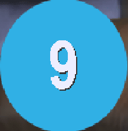

Crítica
Esta es una recopilación de críticas y reseñas hechas por distintos medios.
-
- Vandal
- 
-
Puntos positivos
Uno de los mejores JRPG clásicos que puedes encontrar.
Sus personajes, todos memorables.
Arte y banda sonora.
-
Puntos negativos
Interfaz confusa.
Control limitado.
-
- Tierra Gamer
-
Puntos positivos
Gran historia inmersiva.
RPG clásico y satisfactorio.
Banda Sonora muy bien llevada.
El desarrollo de personajes.
-
Puntos negativos
Algunas canciones son repetitivas porque se reinician todo el tiempo.
Mala calidad gráfica en comparación con su competencia.
-
- IGN Latam
-
Puntos positivos
Una gran historia.
El mini juego de las cartas es adictivo.
Gran soundtrack.
Personajes memorables.
-
Puntos negativos
Las versiones más modernas están mal optimizadas
Bugs que te pueden hacer perder horas de juego.
-
- level up

-
Puntos positivos
Las cinemáticas se ven muy bien.
Es uno de los mejores Final Fantasy.
-
Puntos negativos
A veces se siente viejo.
En las versiones más modernas, los controles no están bien optimizados.